Taiki, Mie: things to do, food and stays
Taiki · Mie
Taiki
Highlighted on the Mie map.

Stay
VILLA ASO
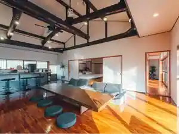
VILLA ASO
Inn in Aso, Taiki with a sauna.
OUR HOUSE
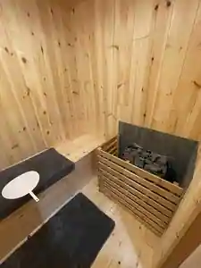
OUR HOUSE
Dining
CAFE めがね書房
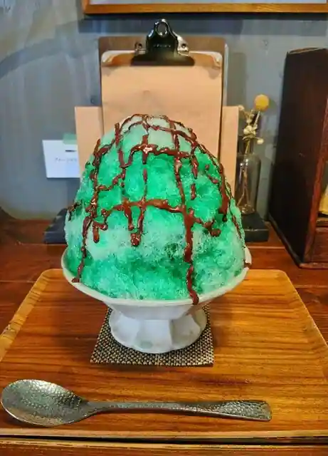
CAFE Megane Shobo
まるたんぼう
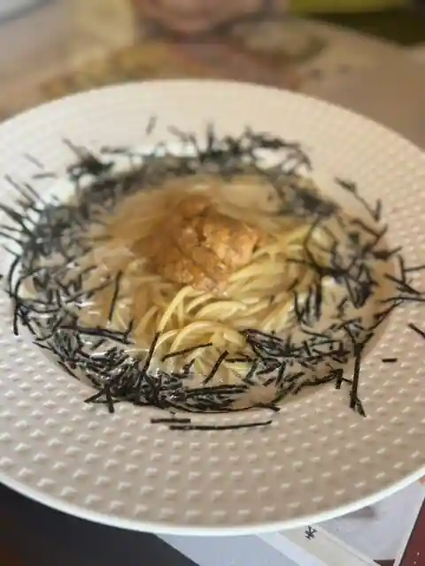
Marutanbo
木つつ木茶屋
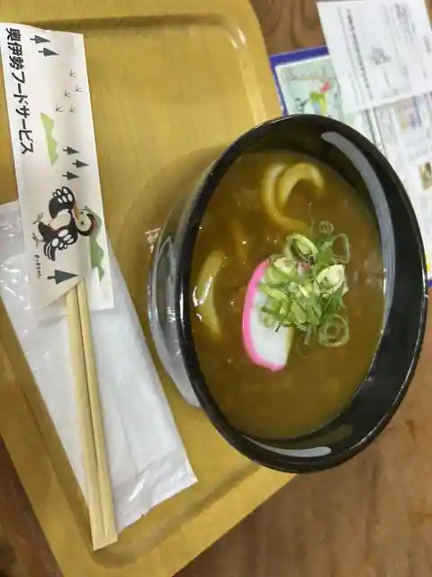
Ki Tsutsu Ki Chaya
いとう
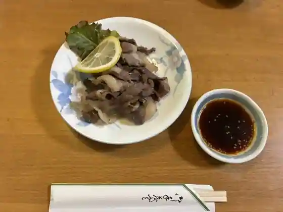
Ito
まさや
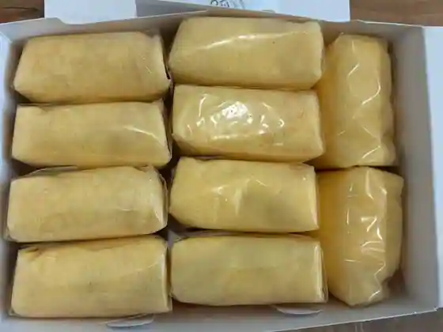
Masaya
宮路
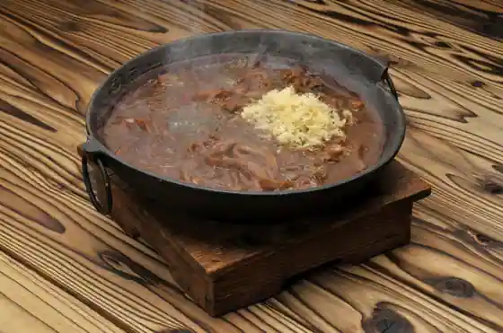
Miyaji
こんぺいとう
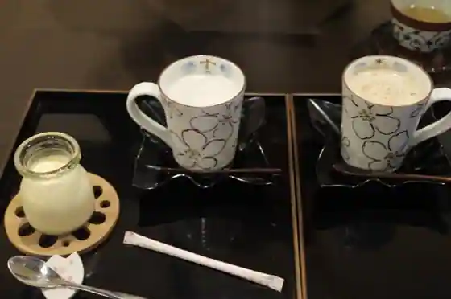
Konpeito
お食事処おーくら
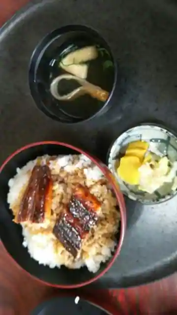
O Shokuji Tokoro Okura
魚々錦
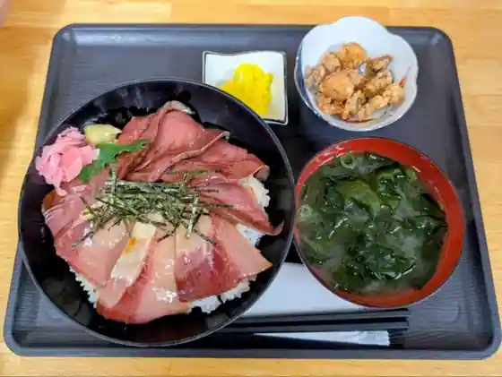
Sakana (Kurikaesi) Nishiki
ゴエンカフェ
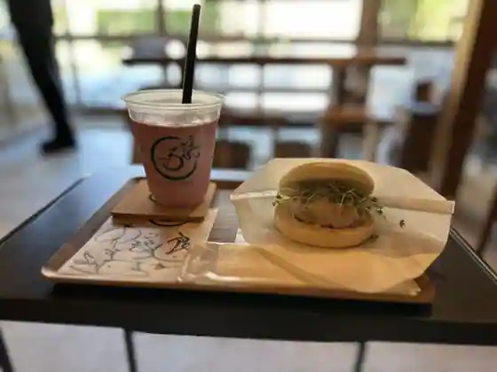
Goen Cafe
亀屋勉強堂
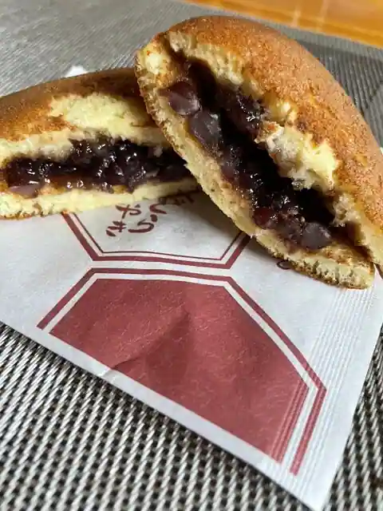
Kameya Benkyo Do
Cafe Tora8
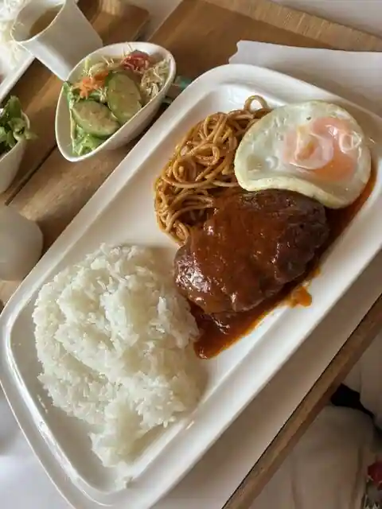
Cafe Tora8
宮川園
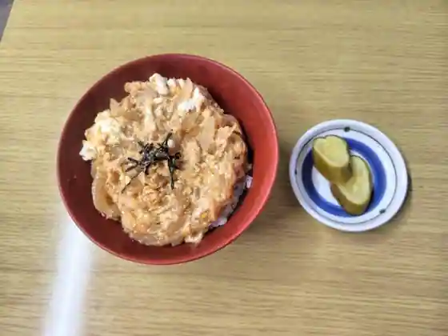
Miyagawa Sono
山小屋
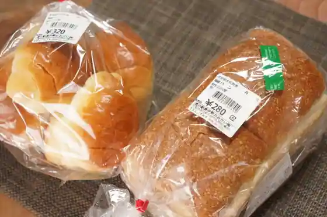
Yamagoya
菓子工房 甘泉堂
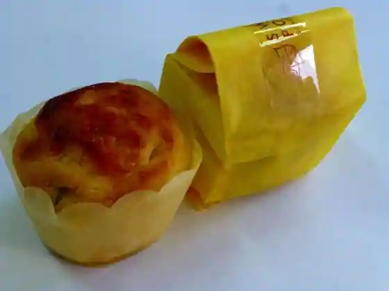
Kashi Kobo Kansen Do
満月農園 カレー小屋 スミタ
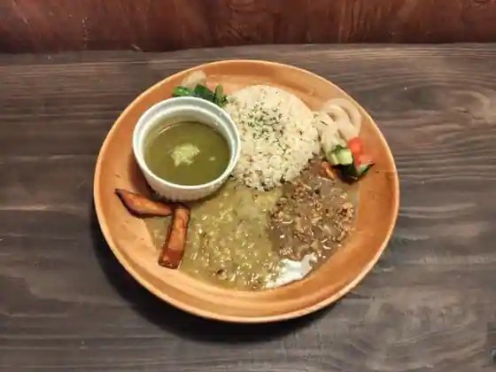
Mangetsu Noen Kare Koya Sumita
あらき
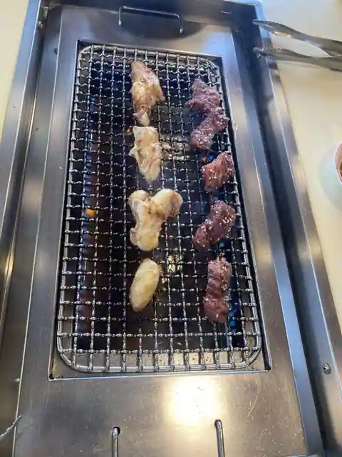
Araki
よし庵
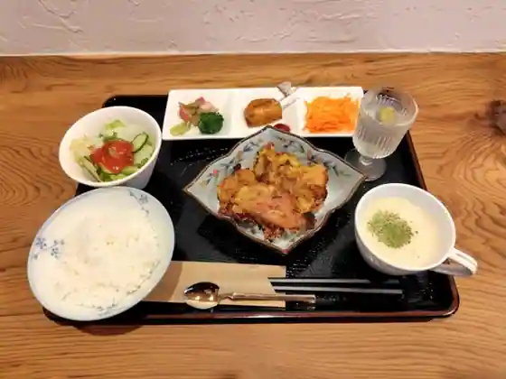
Yoshi Iori
アトリエ・トミカ
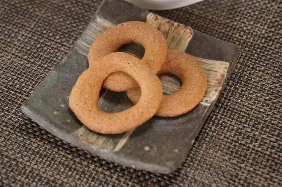
Atorie Tomika
げんさく
Gensaku
やまびこ作業所
Yamabiko Sagyosho
いろは
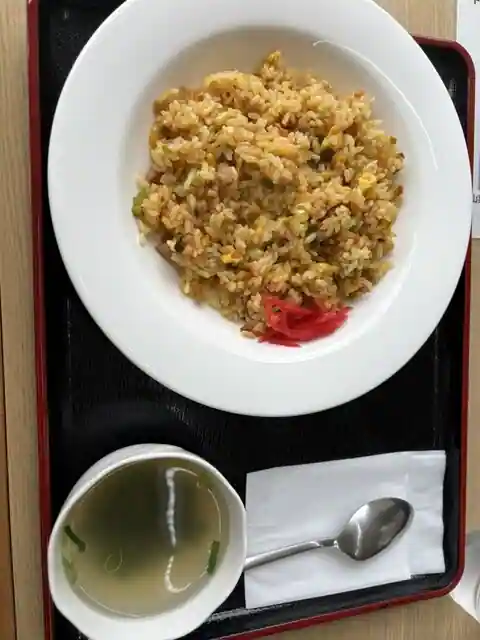
Iroha
茶日
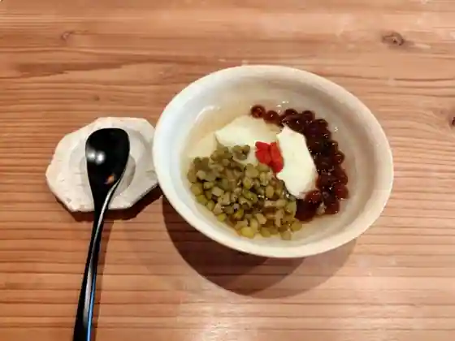
Cha Nichi
Sights
Nishiki Mukaigahama Beach

Ohira Tsutsuji Yama

Nohara no Village Park

Aso Onsen

Otaki Kyo Campground
Taiki Tourism Association
Ochiyama Tezukuri Bara Sono
Hi no Tani Iseki
Agonashi Jizo
Shiki no Mori Fureai Plaza
Otaki Kyo
Shichi Hora Gaku Tozan Haikingukosu
Yahashira Park (Yahashira Shrine)
Ochiyama Kuruma Se Shinsui Park
Minami Mata Yama Forest Park
Kazana
Kunimi Iwa Tozan Haikingukosu
Taiki Nishiki Shiohama Yama Village Plaza
Genshi no Fudo Taki Kisei Kasagi Gorge
Roadside Station (Oku Ise Ki Tsutsu Ki Kan)
Sankai no Sato Kisei Matsuda Shoten
Ochiyama Zoo
Ko Daijin Miya Betsumiya Taki Hara Miya
Taki Hara Miya (Ko Dai Shrine Betsumiya)
Camp Asobino
Nishiki Fisshingu Park
Ka Saka Toge (Kumano Kodo Ise Michi)
Tsuzurato Toge (Kumano Kodo Ise Michi)
Atama Yuki Miya Shiho Shrine
Ochiyama Kawa
Aso Yu Village Koryu Taiken Shisetsu
Shidarezakura
Sakana Sakana Nishiki
Taiki Ochiyama B&G Kaiyo Center
Shichi Ho no Ohatsukiitefu
Experience Gakushu Ki no Ko Land